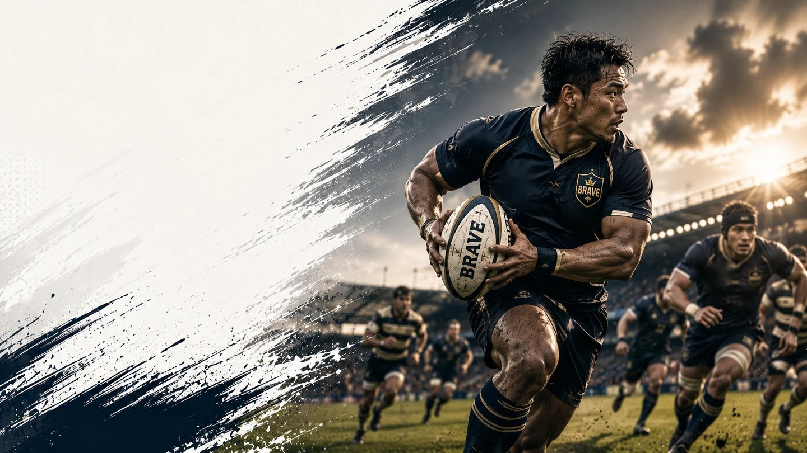

関東・関西・九州の大学ラグビー
大学ラグビーの試合結果・日程・順位を毎日更新
全10カテゴリ・77チームの結果・順位・過去の対戦データを掲載 | 最終更新 2026-08-17
関東の大学ラグビー
対抗戦
関東大学対抗戦Aグループ
チーム 8 消化 0/28試合
関東大学対抗戦Bグループ
チーム 8 消化 0/28試合
リーグ戦
関東大学リーグ戦1部
チーム 8 消化 0/28試合
関東大学リーグ戦2部
チーム 8 消化 0/28試合
関西の大学ラグビー
関西大学ラグビーAリーグ
チーム 8 消化 0/28試合
関西大学ラグビーBリーグ
チーム 8 消化 0/28試合
九州の大学ラグビー
ツナカレと連携しています
ラグビーマニアは学生スポーツ支援プラットフォーム「ツナカレ」と連携し、部活動への応援・掲載・取材の窓口を提供しています。
読みもの
就活 2026-08-17
ラグビー部の経験は就活で武器になる？自己PR・ガクチカの作り方と両立のコツ
大学ラグビー部での経験を就活の自己PR・ガクチカにどう活かすか。評価されやすいポイントの言語化方法と、部活と就活を両立するためのスケジュール管理のコツをまとめました。